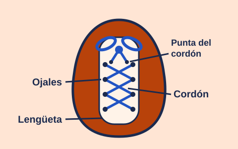

Lección 1 de 3: Partes del cordón
Mira el dibujo

Lo que enseña el video: se muestra un zapato de cerca y se señalan sus partes: el cordón, las puntas del cordón, los ojales y la lengüeta.
Lee con calma
Antes de amarrar, conoce las partes del zapato.
El cordón es la cinta larga que cierra el zapato. Cada punta del cordón tiene una pieza dura y pequeña. Esa pieza ayuda a meterlo por los agujeros.
Los ojales son los agujeros por donde pasa el cordón.
La lengüeta es la tira de tela que está debajo del cordón. Protege tu pie.
Ahora toca tu zapato y busca cada parte.